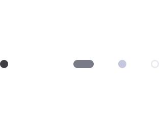
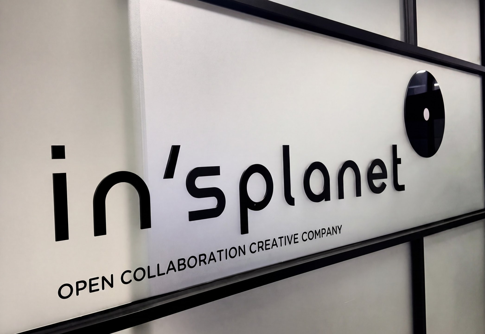
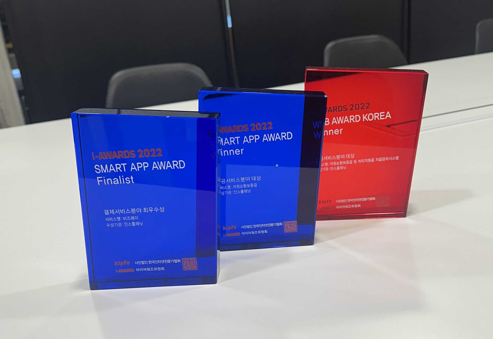
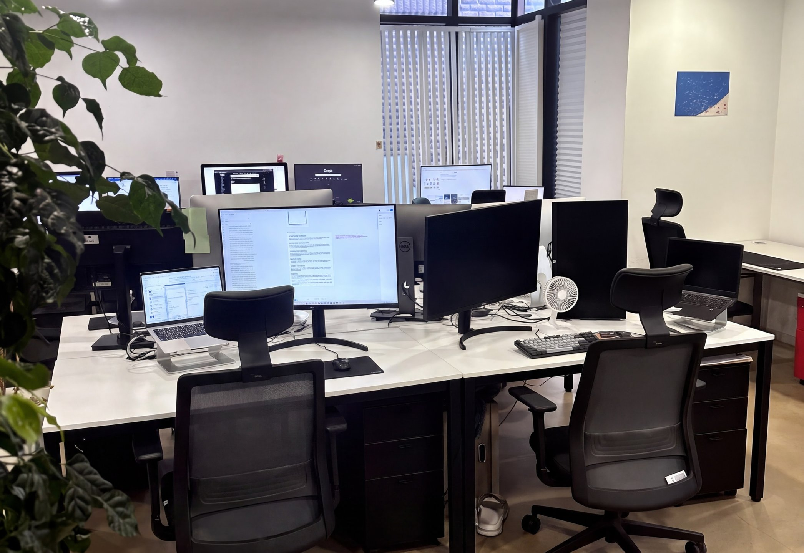
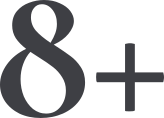

Who We Are
새롭고 독창적인 탐색, 인스플래닛은 경험을 만들어 갑니다.
인스플래닛은 고객이 생각하는 그 이상을 연구하고 고민합니다.
고객의 가치실현을 위한 신뢰할 수 있는 파트너로 함께 성장하고 있습니다.
Mission & Vision
기술에 가치를 더해,
내일의 설렘을 완성합니다.
우리는 차가운 기술 그 자체가 아닌, 그 기술이 비즈니스와 일상에서 만들어낼
본질적인 가치에 집중합니다. 정교한 분석과 끊임없는 고민으로 기술에 생명력을 불어넣고,
고객이 꿈꿔온 미래를 가장 기분 좋은 설렘으로 마주할 수 있도록 완벽한 디지털 경험을 설계합니다.
-
Insight
데이터 너머의 본질을 봅니다.
단순히 현상을 관찰하는 것에 그치지 않고,
깊이 있는 분석을 통해 비즈니스가 나아가야 할
숨겨진 가치와 정답을 찾아냅니다. -
Interest
사람을 향한 호기심에서 시작합니다.
기술이 일상에 자연스럽게 스며들 수 있도록
사용자의 작은 목소리에도 귀를 기울이며,
모두가 즐겁게 누릴 수 있는 최적의 경험을 탐구합니다. -
Innovation
당연함을 의심하며 내일을 앞당깁니다.
익숙한 방식에 안주하지 않고
가장 진보된 기술을 유연하게 도입하여,
상상이 현실이 되는 새로운 디지털 기준을 세워갑니다.
정교한 금융의 깊이에
모빌리티의 확장성을 더해,
세상에 없던 가치를 연결합니다.

우리는 숫자 속에 담긴 금융의 본질을 꿰뚫고, 대규모 모빌리티 플랫폼이 지닌
무한한 연결성을 탐구합니다. 단순히 두 산업을 결합하는 기술력을 넘어, 그 접점에서 피어나는
새로운 비즈니스 가능성을 발견하고 이를 고객의 실질적인 가치로 증명해 나갑니다.
-
Mega Finance DNA
신한 ‘슈퍼SOL’ 6년 전담 운영 및 차세대 통합 기획 등
제1금융권 핵심 플랫폼의 혁신을 주도해왔습니다. -
SI Synergy & Partnership
LG CNS, 신한DS의 공식 협력사로서 대형 SI 주사업자와의
완벽한 시너지로 프로젝트의 성공을 이끕니다. -
Mobility & Enterprise Insight
대규모 모빌리티 플랫폼 구축 및 기술 시각화 노하우로
차세대 비즈니스를 지원합니다. -
AX Tech & Design System
고유 디자인 시스템과 자체 AX 솔루션 R&D를 통해
프로젝트 생산성과 기술 경쟁력을 극대화합니다.



Beyond UX The AX Creator
단순한 경험의 개선을 넘어, 기술이 스스로 가치를 창출하는 시대를 엽니다.
우리는 기존의 사용자 경험(UX)이라는 틀에 안주하지 않습니다.
인스플래닛의 사고방식은 고도화된 AI 기술을 비즈니스 본질에 이식하여, 스스로 진화하고
최적의 해답을 제시하는 AX(AI Experience)를 설계하는 데 있습니다.
우리는 고객의 요청을 구현하는 것에 그치지 않고,
데이터 너머의 맥락을 읽어내어 비즈니스의 다음 차원을 창조합니다.
- Projects done
- Years of experience

- Team members